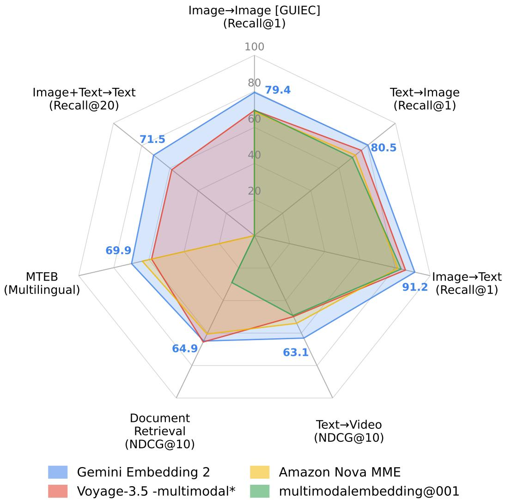

Visual SSL / representation · P0 · 2026-05-28
Gemini Embedding 2：多模态 embedding 正在成为视觉表征的外部接口；它对“通用视觉表征是否还能独立于文本/音频/视频存在”这个问题很有参考价值
把 image/text/video/audio 检索与分类放进同一表示空间，避免为不同模态维护多套 encoder 和对齐层。
Gemini Embedding 2: A Native Multimodal Embedding Model from Gemini Madhuri Shanbhogue , Zhe Li , Shanfeng Zhang , Gustavo Hernández Ábrego , Shih-Cheng Huang , Aashi Jain , Daniel Salz , Sonam Goenka , Chaitra Hegde , Ji Ma , Feiyang Chen , Jiaxing Wu , Tanmaya Dabral , Babak Samari , Kevin Poulet , Daniel Cer , Kaifeng Chen , Paul Suganathan , Hui Hui , Jovan Andonov , Philippe Schlattner , Jay Han , Iftekhar Naim , Wing Lowe , Vladimir Pchelin , Albert Yang , Yi-Ting Chen , Zhongli Ding , Grace Zhang , Georg Heigold , Yichang Chen , Antoine Reveillon , Brendan Mccloskey , Wenlei Zhou , Dahun Kim , Rui Meng , Emma Wang , Jack Zheng , Halley Fede , Zhen Yang , Keegan Mosley , Brian Potetz , Sahil Dua , Henrique Schechter Vera , Shen Gao , Hesen Zhang , Andreas Hess , Hengxuan Ying , Alberto Montes , Karan Gill , Min Choi , Sebastian Russo , Anja Hauth , Jinhyuk Lee , Michael Boratko , Megan Barnes , Vikram Rao , Claudiu Musat , Cyril Allauzen , Ehsan Variani , Shankar Kumar , Tom Bagby , Junyi Jiao , Yang Gu , Tengxin Li , Ayush Agrawal , Roberto Santana , Dev Nath , Stephen Karukas , Shuoxuan Han , Lucia Loher , Alice Twu , Nidhi Vyas , Siddharth Bhai , Frank Palma Gomez , Wangyuan Zhang , Chaoren Liu , Jizheng Yang , Steve Qiu , Shijie Zhang , Sujay Kulkarni , Sascha Rothe , Sean Nakamoto , Raphael Hoffmann , Zach Gleicher , Yunhsuan Sung , Qin Yin , Tom Duerig , Mojtaba Seyedhosseini arXiv 原文链接
编号 2605.27295优先级 P0类别 Visual SSL / representation会议 arXiv方法 以 Gemini 多模态能力为底座，面向任意交错输入组合学习统一 embedding；训练采用大规模 contrastive learning 与多任务、多阶段配方。来源 arXiv / OpenReview
先说结论。多模态 embedding 正在成为视觉表征的外部接口；它对“通用视觉表征是否还能独立于文本/音频/视频存在”这个问题很有参考价值。 把 image/text/video/audio 检索与分类放进同一表示空间，避免为不同模态维护多套 encoder 和对齐层。
Figureure 1 · | Conceptual overview of the Gemini Embedding 2 workflow Figure 1 | Conceptual overview of the Gemini Embedding 2 workflow. The model natively processes heterogeneous inputs—text, images, video, audio, documents, and their combinations—mapping them into a single, unified high-dimensional vector space where cross-modal semantic relationships are preserved. 这张图概括 Gemini Embedding 2 的整体方法流程。阅读时先看模块之间传递的训练信号，再看作者如何把目标拆成可优化的子问题。 
Figureure 2 · | Gemini Embedding 2 shows strong performance across multimodal retrie Figure 2 | Gemini Embedding 2 shows strong performance across multimodal retrieval tasks spanning image, text, video, and document modalities. 这张图/表用于判断 Gemini Embedding 2 的实验收益来自哪里。重点看替换、消融或跨模型设置下趋势是否一致，而不是只看单个最高分。 核心问题
多模态 embedding 正在成为视觉表征的外部接口；它对“通用视觉表征是否还能独立于文本/音频/视频存在”这个问题很有参考价值。
方法拆解
以 Gemini 多模态能力为底座，面向任意交错输入组合学习统一 embedding；训练采用大规模 contrastive learning 与多任务、多阶段配方。
主要贡献
把 image/text/video/audio 检索与分类放进同一表示空间，避免为不同模态维护多套 encoder 和对齐层。
实验看点
摘要列出 MSCOCO R@1 62.9、VATEX NDCG@10 68.8、MTEB multilingual 69.9、MTEB Code 84.0，并强调跨专业领域 zero-shot 稳定性。
局限与读法
论文更像系统级模型报告，训练数据组成、负样本构造、模型大小和可复现实验细节需要读正文确认；闭源模型也限制外部消融。